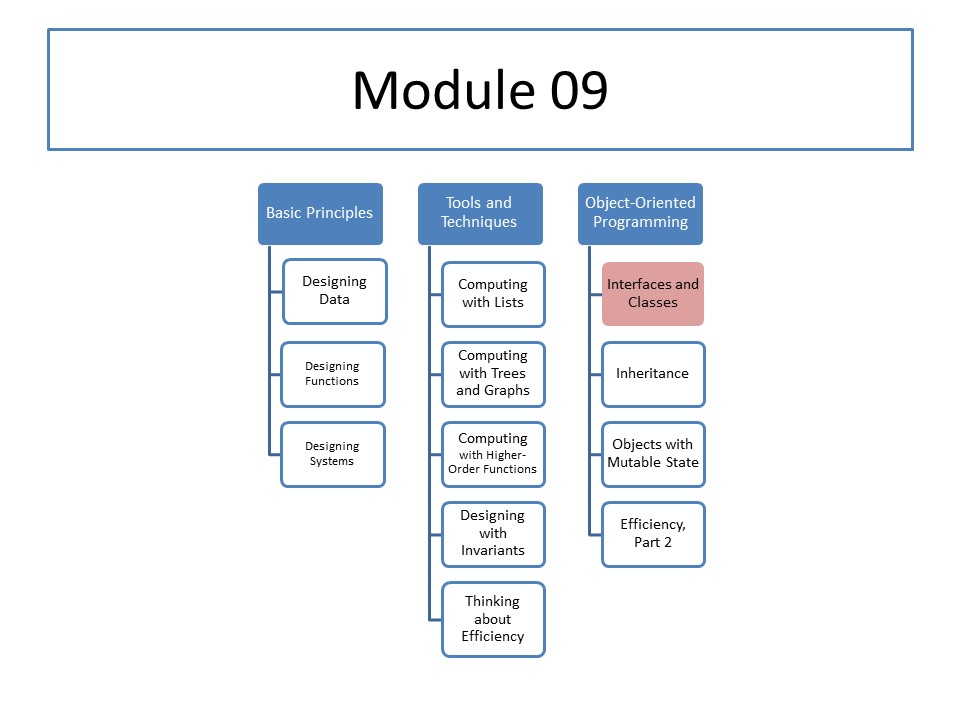

CS 5010: Module 09
Module Overview
In this module, we will see how everything we've learned so far can be ported to an object-oriented context. We'll see how:
- objects correspond to structs
- classes correspond to define-structs, and
- interfaces correspond to data definitions.
We'll see how a functional orientation and an object orientation are just two ways of looking at the same definitions.
Then we'll consider some of the subtleties of testing in an object-oriented setting.
We'll summarize by rewriting the Design Recipe for an object-oriented setting, and see how our deliverables should appear in your program.
Course Map
Readings
No required readings.
Most of you have written small programs in Java or in a related language such as C# or C++.
Those of you who haven't done any programming in Java will need to learn the basic concepts and syntax of Java. The tutorial resources listed below are designed to teach you what you need to know about Java.
Resources
You have been using DrRacket's editor to create and to edit Racket programs. For Java programs, you will need to use a different text editor such as Emacs or Eclipse.
We will test your Java programs using JDK 8 on a Linux machine or Macintosh. That means you may need to install JDK 8 on the machine you use for writing your CS 5010 programs, so you can test your programs using the same version of Java we will be using to test your programs. (If you are using a Linux machine, Java is probably already installed. If you are using a Macintosh, you probably installed Java at the beginning of the semester when you installed the XCode Command Line Tools. If you are using a Windows machine, you will probably have to install Java yourself.)
If you are unable to install JDK 8 on the machine you have
been using for writing programs, you can test your programs
on login.ccs.neu.edu.
We recommend the following tutorials, especially if you do not feel comfortable programming in Java or do not know how to invoke the Java compiler and runtime system from a Linux command line.
- "Hello World!" for Solaris OS and Linux
- Lesson: A Closer Look at the "Hello World!" Application
- Questions and Exercises: Getting Started
- Lesson: Common Problems (and Their Solutions)
-
Trail: Learning the Java Language
(You can use this as a reference manual for the Java language. The real reference manuals for Java are far more detailed, and tell you more than you need to know for this course.)
You may also need to consult the documentation for Java's standard libraries:
Lessons
- Lesson 9.1: Classes, Objects, and Methods
- Lesson 9.2: Interfaces
- Lesson 9.3: Creating a New Object
- Lesson 9.4: Case Study: Universal Coordinated Time (UTC)
- Lesson 9.5: Functions vs Classes
- Lesson 9.6: Design Recipe Using Classes
Problem Set